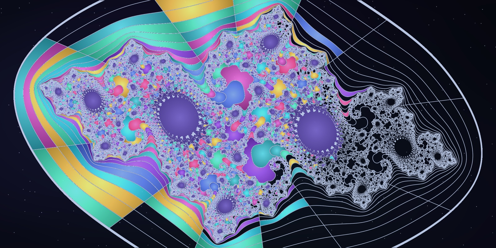
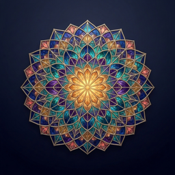

5 Endless Coloring Studios
Mandalas & Sacred, Stained Glass, Infinite Fractals (Julia, Mandelbrot, Circle Bubbles, Crystal Webs & Snowflakes), Geometric Tiles, and Botanical & Flow — plus a free Daily Zen page every day.


A calm, tactile coloring studio for iPhone and iPad. Explore endless fractals, mandalas, stained glass, geometric tiles, and botanical patterns with relaxing offline soundscapes.
Mandalas & Sacred, Stained Glass, Infinite Fractals (Julia, Mandelbrot, Circle Bubbles, Crystal Webs & Snowflakes), Geometric Tiles, and Botanical & Flow — plus a free Daily Zen page every day.
Stay effortlessly inside crisp lines or paint freehand with Colored Pencil, Marker, Airbrush, Fine Ink, Watercolor, Pastel, Oil Paint, Stipple, Iridescent, Neon Glow, Gold Leaf, Tap Fill, and Symmetry coloring.
9 original offline music moods (Neon Chillwave, Kyoto Lo-Fi, Piano & Violin, Rainy Jazz & more), stereo Binaural Beats, soft rain, pencil ASMR, and live animated space & aurora backdrops.
No subscriptions and no ads — ever. Start free, unlock only the studios you love, or grab the Complete Studio Bundle once with Apple Family Sharing included.